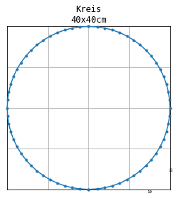
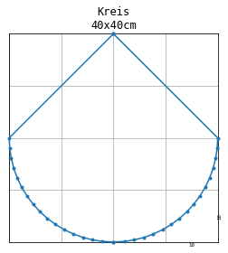

Examples for general profile shapes¶
[1]:
from shape_generator import CrossSection, Circle
Example for standard egg cross section¶
[2]:
label = 'P0'
r = 30
unit = 'cm'
R = 3 * r
roh = r / 2
height = r * 3
width = r * 2
# h1 = roh - (r + roh) / (R - roh) * roh
h1 = r/ 5
cross_section = CrossSection(label=label, width=width, height=height, unit=unit)
cross_section.add(Circle(roh, x_m=roh))
cross_section.add(h1)
cross_section.add(Circle(R, x_m=2 * r, y_m=-(R - r)))
cross_section.add(2 * r)
cross_section.add(Circle(r, x_m=2 * r))
[3]:
import pandas as pd
pd.DataFrame(cross_section.get_points()).T.rename(columns={0:'$h_i$', 1:'$w_i$'})
[3]:
| $h_i$ | $A_i$ | |
|---|---|---|
| 0 | 0.00 | 0.000000 |
| 1 | 0.09 | 1.640701 |
| 2 | 0.45 | 3.646574 |
| 3 | 0.99 | 5.359095 |
| 4 | 1.62 | 6.780531 |
| 5 | 2.52 | 8.321634 |
| 6 | 3.51 | 9.642609 |
| 7 | 4.68 | 10.885660 |
| 8 | 6.00 | 12.000000 |
| 9 | 11.94 | 16.093603 |
| 10 | 18.24 | 19.725168 |
| 11 | 24.81 | 22.835161 |
| 12 | 31.56 | 25.388327 |
| 13 | 38.49 | 27.391761 |
| 14 | 45.60 | 28.840531 |
| 15 | 52.80 | 29.711538 |
| 16 | 60.00 | 30.000000 |
| 17 | 62.97 | 29.852623 |
| 18 | 65.85 | 29.424097 |
| 19 | 68.73 | 28.701692 |
| 20 | 71.52 | 27.699993 |
| 21 | 74.22 | 26.415745 |
| 22 | 76.74 | 24.895228 |
| 23 | 79.08 | 23.150672 |
| 24 | 81.24 | 21.186373 |
| 25 | 83.22 | 18.995568 |
| 26 | 84.93 | 16.688172 |
| 27 | 86.46 | 14.137482 |
| 28 | 87.72 | 11.471774 |
| 29 | 88.71 | 8.702638 |
| 30 | 89.43 | 5.820232 |
| 31 | 89.88 | 2.680597 |
| 32 | 90.00 | 0.000000 |
[4]:
fig = cross_section.profile_figure()
Example for custom cross section¶
[5]:
def add_and_show(cs, *args, **kwargs):
cs.add(*args, **kwargs)
print('-' * 5, *cs.shape_description, '-' * 5, sep='\n')
cs.profile_figure()
[6]:
label = 'Kreis'
r = 20 # cm
unit = 'cm'
kreis = CrossSection(label=label, height=2*r, unit=unit)
add_and_show(kreis, Circle(r, x_m=r))
-----
Circle Function (radius=20.00, mid=[20.00, 0.00])
-----

[7]:
add_and_show(kreis, r)
-----
Circle Function (radius=20.00, mid=[20.00, 0.00])
Slope Function (k=-1.00, zero=[20.00, 20.00])
-----

[8]:
add_and_show(kreis, 30, '°slope')
-----
Circle Function (radius=20.00, mid=[20.00, 0.00])
Slope Function (k=0.58, zero=[20.00, 20.00])
-----

[9]:
add_and_show(kreis, None,1.5*r)
-----
Circle Function (radius=20.00, mid=[20.00, 0.00])
Slope Function (k=0.58, zero=[20.00, 20.00])
Slope Function (k=-0.47, zero=[25.77, 30.00])
-----